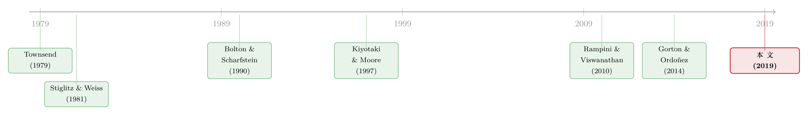

为什么宁可抵押，也不卖掉？——一块「不够流动」的资产，如何长出了抵押溢价
本文读的是 Parlatore (2019, Journal of Financial Economics)：当投资回报不可观测、资产不够流动、且投资机会有持续性时，借款人会主动选择把金融资产抵押出去（collateralized debt），而不是干脆卖掉它来融资——而正是「资产不够流动」这一点，内生地撑起了一个流动性折价和一个抵押溢价。
1 引言：一个每天都在发生、却很少被追问的选择
每天，全球有数以万亿美元计的资金，是靠抵押化债务（collateralized debt）借出来的——回购协议（repurchase agreement, repo）、抵押化的场外衍生品交易，都是这套机制的日常形态（Gorton and Metrick, 2012a, 2012b; Copeland et al., 2014）。货币市场基金、信用社、抵押贷款 REITs、券商交易商……这些机构的融资命脉，很大程度上系在「拿资产去抵押」这件事上。
这件事我们看得太习惯，以至于忘了它其实很奇怪。
奇怪在哪？传统的抵押理论，要么假设借款人没法卖掉那块抵押品（比如它是生产必需的机器设备），要么假设借款人天生就比贷款人更看重这块资产。可现实里，repo 里被抵押的、衍生品交易里被质押的，恰恰是那些完全可以拿到金融市场上卖掉的资产。而且和被典当的传家宝、被用来换信用额度的房产不同，这些金融资产的内在价值与谁持有它无关——一张国债在你手里和在我手里，贴现回来的现金流是一样的。
于是问题就尖锐起来了：既然这些资产随时能卖、谁拿着都一个价，为什么这么多金融机构偏偏选择把它们抵押出去，而不是直接卖掉来筹钱？
这正是 Parlatore (2019) 要回答的问题。这篇文章不去外生地塞给资产一个「卖不掉」或「借款人更爱它」的假设，而是反过来——从借款人的最优融资选择出发，让「抵押优于出售」作为一个内生的结论自己长出来。
一句话剧透：抵押之所以优于出售，靠的不是「资产卖不掉」，而是「资产不够好卖」。差一点点的流动性，足以让借款人宁可背着一份「只在违约时才割肉」的合约，也不愿意「无论成败都先把资产交出去」。
2 张力的源头：为什么借款人会比贷款人更看重同一块资产？
要让「抵押」这件事有意义，必须先回答一个更基础的问题：借款人和贷款人，凭什么对同一块资产给出不同的估值？
注意，论文里这两个人都是风险中性、贴现因子相同的。如果把他们各自关起门来（autarky），两人对资产的估值是完全一样的——都等于未来股息流的贴现和。资产本身没有任何「内在的」估值差异。
差异从哪来？从摩擦里来。
模型里有一条核心摩擦：借款人投资项目的回报，是他的私人信息（private information），贷款人看不见、也没法验证。这条摩擦带来一个直接后果——既然项目回报不可观测、而项目又可能亏损，借款人就没法发行无担保债务（试想 \(\theta_L = 0\)，项目失败时他一无所获，拿什么还无担保的钱？贷款人根本不会借）。他想投资，就必须靠资产去筹钱。
于是逻辑链条接上了：
- 因为只有「持有资产」才能让借款人抓住投资机会，所以借款人比贷款人更看重这块资产；
- 又因为投资机会是持续的（persistent）——今天是借款人的人，明天大概率还是借款人（想想 repo 市场里，货币基金长期当贷方，对冲基金和专业放贷人长期当借方）——所以借款人想带尽可能多的资产进入下一期，好继续投资。
接着，一个自然的问题是：既然借款人想多留资产，那「卖掉」和「抵押」对他到底有什么不同？
这就要看资产好不好卖了。
- 如果资产完全流动（perfectly liquid）：借款人其实无所谓。今天卖出去的，明天总能在市场上原价买回来，抵押和出售对他等价。
- 如果资产不够流动：卖出去的就买不回来了。这时，为了让下一期手里的资产最多，借款人会选择抵押——因为抵押下，他只在项目失败、发生违约时才会失去资产，而出售则是无论成败都铁定先把资产交出去。
这就是全文的核心张力。下面我们把它放进一个可以一步步推的模型里。
3 模型设定：两期、两个早晚、一张合约
Parlatore 用一个极简的动态最优融资模型把上面的故事钉死。先看基准（baseline）版本。
时间与人。 两期 \(t = 1, 2\)，每期又分早上（morning）和下午（afternoon）。两个风险中性的人：借款人 \(B\)（企业）和贷款人 \(L\)，共同的贴现因子 \(\beta \in (0,1)\)。
两种东西。 一种可储存的消费品，一种长寿命的金融资产。持有 \(a\) 单位资产，每期下午派发 \(da\) 单位消费品作为股息。贷款人每期都有一大笔消费品禀赋 \(\bar{e}\)；借款人第一期只有 \(a_{B1}\) 单位资产、没有消费品。
项目。 借款人每期早上有一个有风险的、固定回报的短期项目：早上投入 1 单位消费品，下午得到随机回报 \(\theta_t \in \{\theta_L, \theta_H\}\)，且 \(\theta_L < \theta_H\)。这个回报只有投资的借款人自己看得见。回报跨期独立同分布，\(\pi_i \equiv \Pr(\theta_t = \theta_i)\)。项目期望上赚钱，但失败时会亏：
$$ 1 < E(\theta_t) \equiv \pi_L \theta_L + \pi_H \theta_H, \qquad 0 \le \theta_L < 1. $$
为简化，令 \(\theta_L = 0\)。
关键假设（不耐心）。 论文的 Assumption 1 是：
$$ \beta E(\theta) < 1. $$
它的含义很妙：借款人宁可马上消费掉项目收益，也不愿存起来留着以后投。换句话说，资产「逼着」它的持有者储蓄——你不能靠囤消费品来跨期搬运财富，只能靠持有这块金融资产。这一条让模型干净地把注意力收束到「资产」这一个跨期工具上。
时点（timing）。 早上：借款人选定融资合约、贷款人把资金交给借款人、借款人投进项目。下午：回报 \(\theta_t\) 实现、合约结算、资产派息。
这个时点安排藏着两个要命的含义：第一，股息在下午才派、投资却在早上做，所以若把两人各自关起来，他俩对资产的估值一模一样——没有任何内在估值差。第二，借款人想投资，就必须在早上从贷款人那儿先拿到钱。摩擦与需求，全被时点逼了出来。
合约长什么样。 一份短期融资合约（Definition 1）由三部分组成：以消费品计的融资额 \(k\)；以消费品计的或有偿付 \(r_i\)；以及资产转移 \(t_i\)（\(i = L, H\)，含当期股息的转移）。
这里是全文最聪明的一处「翻译」：
- 非或有的资产转移（\(t_L = t_H\)）= 资产出售（asset sale）：不管报什么状态，都交出同样多的资产；
- 或有的资产转移（\(t_L \neq t_H\)）= 抵押贷款（collateralized loan）：只在「违约」的那个状态才交出资产。
也就是说，「卖掉」还是「抵押」，在这个模型里不是两套外生的制度，而是同一份合约里 \(t_L\) 与 \(t_H\) 是否相等这一个内生选择。漂亮。
可行性（Definition 2）。 合约要在资源约束内：
$$ 0 \le k \le \bar{e}, \qquad 0 \le r_i \le d(a_t - t_i) + \theta_i k, \qquad 0 \le t_i \le a_t, \quad i = L, H. $$
第一条说融资额非负、不能超过贷款人的禀赋；第二条说消费品偿付非负、且不能超过借款人在转移 \(t_i\) 资产后手里实际有的消费品（项目收益 \(\theta_i k\) 加上剩余资产的股息 \(d(a_t - t_i)\)）；第三条说资产转移不能超过持有量、也不能反向「买」资产。
4 核心推导：激励相容，如何让「抵押」浮出水面
现在到了真正关键的一步。回报不可观测，意味着合约不能直接写在 \(\theta\) 上，只能写在借款人自己报告的状态上——而借款人会撒谎，除非合约让他没有动机撒谎。这就是激励相容（incentive compatibility, IC）约束。
激励相容（Definition 3）。 当 \(r_L \le \theta_H k + d(a - t_L)\) 时，
$$ -r_L - dt_L + \beta V_{t+1}^{B}(a - t_L) \;\le\; -r_H - dt_H + \beta V_{t+1}^{B}(a - t_H), \tag{$IC_H$} $$
且当 \(r_H \le \theta_L k + d(a - t_H)\) 时，
$$ -r_H - dt_H + \beta V_{t+1}^{B}(a - t_H) \;\le\; -r_L - dt_L + \beta V_{t+1}^{B}(a - t_L). \tag{$IC_L$} $$
其中 \(V_{t+1}^{B}(a)\) 是 \(a\) 单位资产对借款人在 \(t+1\) 期的价值，且 \(V_3^{B}(a) = 0\)。
怎么读 \(IC_H\)？左边是借款人老实报高状态时的净处境（交出 \(r_L, t_L\) 后剩下的钱，加上带着 \(a - t_L\) 单位资产进下一期的延续价值），右边是谎报低状态时的净处境。\(IC_H\) 要求：真话至少不比假话差。\(IC_L\) 是低状态下的对称版本。前面那个「whenever」条件，则是在保证「他确实有足够资源去执行被分配到那个状态的偿付」。
注意 \(V_{t+1}^{B}(\cdot)\) 这一项——正是它，把「投资机会的持续性」喂进了激励约束里。如果带进下一期的资产更值钱（\(V_{t+1}^{B}\) 随资产递增），那么「谎报、好少交点资产」的诱惑就更大，约束也就更紧。这是全文机制的枢纽。
第二期的问题。 在第二期早上，借款人选一份可行、激励相容的合约，最大化期望消费：
接着，把第二期的最优解代回，借款人比贷款人到底多看重这块资产，就有了一个明确的来源：有资产，才能在下一期早上筹到钱、抓住投资机会；没资产、又因 \(\theta_L = 0\) 而无法承诺偿还，贷款人根本不会借给他。
于是反转出现。 在第一期，借款人手里捏着第二期的延续价值 \(V_2^B(\cdot)\)。他要权衡的核心比较是这样的——
为了筹到同样多的钱，他有两条路：
- 交资产：每交出 1 单位资产，他最多只能换到贷款人对它的估值，而贷款人的估值（以消费品计）低于借款人自己的估值（因为借款人有更好的用途）。所以交资产是「贱卖」，很贵。
- 交消费品：直接拿项目收益里的消费品去还。
既然交资产比交消费品更亏，借款人就会尽量用消费品还钱，只在「消费品不够还」的那些状态里才被迫交资产。而「只在某些（坏）状态交资产」——这恰恰就是 \(t_L \neq t_H\)，就是抵押。用论文的话说：抵押让借款人只在项目失败、发生违约时才失去资产，而不是像出售那样以概率 1 失去它。
把这条逻辑钉死的，是「资产够不够流动」：
- 若资产完全流动：借款人卖了还能买回，两种方式等价，他无差异；
- 若资产不完全流动：买不回来了，为了带最多的资产进下一期，他严格偏好抵押。
这就是主结果。它没有假设借款人卖不掉资产、也没有假设他天生更爱资产——借贷双方在下午的估值差，是内生出现的，且依赖于「资产在下午不够完全流动」。
5 流动性如何被定价：illiquidity discount 与 collateral premium
到这里，基准模型还缺一块：下午根本没有资产市场（资产被假设为下午完全不流动）。论文第 3 节把这块补上——让两人在第一期下午以某个概率能进入一个竞争性的资产市场。这一步，把「流动性」从一个开关变成了一个连续的旋钮，也让两个价格量自然浮现。
第一个价格：流动性折价（illiquidity discount）。
借款人是这块资产最有效率的持有者——因为只有他能用资产在下一期早上筹钱去投资。当资产完全流动、下午市场无摩擦时，资产对借款人的价值达到最大。可一旦资产不够流动，下午就有一部分资产滞留在贷款人手里，在第一期末被错配（misallocation）了。错配的后果是连锁的：借款人带进下一期的资产变少 → 第二期能投的更少 → 一开始持有资产的价值就被压低。而且这个错配随着资产越不流动而越严重，所以：
流动性折价随资产的非流动性单调上升——资产越「难卖」，因错配而损失的价值就越大。
第二个价格：抵押溢价（collateral premium）。
这是「把资产抵押出去，相比卖掉它，借款人能多借到的那部分钱」在借款人眼里的价值。
- 当资产完全流动：借款人在抵押与出售之间无差异，抵押溢价为零；
- 当资产不流动：交资产是亏的，于是借款人可以可信地承诺：用消费品多还给贷款人一些（多到超过贷款人对资产的估值），来换取「不丢掉资产」。这份「我愿意多还、只为留住资产」的意愿，就是抵押溢价的来源。它取决于借贷双方在下午的估值差，并且随资产的非流动性递增。
两个价格，一个方向：资产越不流动，流动性折价越高，抵押溢价也越高。这是全文最值得记住的比较静态。
（关于「资产能不能被抵押、由谁来接盘决定它的命运」，可参见《一笔贷款长成什么样，取决于「未来谁来接盘」》；关于未动用抵押能力的「期权」价值，可参见《未动用的抵押品，是高评级公司留给坏天气的「救生艇」》。）
最后，第 3 节还把「投资机会」也随机化：只要进入投资机会的通道是持续的，借款人在下午就会对资产有更高估值，一块不完全流动的资产就会被最优地拿去抵押。第 4 节再把这套逻辑推到无限期：稳态经济的配置效率随资产流动性上升——下午流动性越好，借款人带进下一期的资产比例越高，整体产出越高。结论在两期与无限期之间是一致的。
6 文献脉络：从「成本状态验证」到「内生的违约成本」
把这篇论文放进它所在的那条河里看，会更清楚它的位置。
最上游，是最优合约这条线。Townsend (1979) 提出成本状态验证（costly state verification）：贷款人花成本才能核实回报，于是最优合约长得像债。沿着它，Gale and Hellwig (1985)、Bernanke and Gertler (1989)、Bernanke et al. (1998) 都得到「类抵押债务」的最优合约；Bolton and Scharfstein (1990) 则把它写成一份「违约就清算」的长期合约；Lacker (2001)、Rampini (2005) 进一步刻画违约的非货币惩罚。这些文章有一个共同点：对借款人的违约惩罚（也就是抵押之所以管用的关键）是被假设进去的。

与此并行的，是抵押作为执行与威慑机制的一支：Stiglitz and Weiss (1981)、Chan and Kanatas (1985)、Kocherlakota (2001) 把抵押看作约束违约的手段；Kiyotaki and Moore (1997) 把抵押约束推到了商业周期；Rampini and Viswanathan (2010, 2013) 用它讲企业的资本结构。但在这些文章里，被抵押的资产要么本身就不流动、要么是生产投入，所以「卖掉」根本不是一个选项。
还有一支是内生杠杆（endogenous leverage）的一般均衡传统：Araujo et al. (1994)、Geanakoplos (2003)、Geanakoplos and Zame (1997)、Fostel and Geanakoplos (2008)，让抵押率成为均衡结果——但它们把合约空间事先限定成了抵押债务。
Parlatore (2019) 站在这三股水流的交汇处，做了一件别人没做的事：让违约成本内生。被抵押的不再是「卖不掉的」资产，而是一块本可以卖掉的流动金融资产；抵押债务也不是被预设的合约形式，而是从最优合约里自己冒出来的。和 Gorton and Ordoñez (2014) 那种「事前对抵押品价值有信息不对称」的逻辑也不同——这里对资产价值没有任何信息不对称，真正起作用的是事后关于「借款人有没有能力还钱」的不对称。至于 repo 这一支（Duffie, 1996；Monnet and Narajabad, 2012；Gottardi et al., 2017），本文的机制可以平移过去：它给「为什么用回购而不是直接卖断」提供了一个不依赖交易成本、也不依赖外生持有价值的微观基础。
7 评论与延伸（Q&A + 研究方向）
(a) 几个可能的疑问
Q：这和 Kiyotaki–Moore 那种「抵押约束」到底有什么不同？
不一样。Kiyotaki–Moore 里，抵押品是生产必需的实物，卖了就没法生产，所以「抵押 vs 出售」根本不构成选择；抵押约束是外生加上的。这里的抵押品是可随时变卖的金融资产，「抵押还是出售」是借款人内生的最优选择，而抵押胜出靠的只是「不够完全流动」这一点摩擦。
Q：既然借贷双方风险中性、贴现因子还相同，凭什么对同一资产估值不同？
关在各自屋里时，他俩估值完全一样。差异完全是摩擦的产物：回报不可观测 → 借款人非靠资产才能筹钱投资 → 资产对借款人「更有用」→ 在投资机会持续时，借款人想多留资产。估值差是内生的，不是禀赋里塞进去的。
Q：「持续性」假设是不是太强了？
它确实是机制的命门，但作者论证它只需要「持续」、不需要「永远」：第 3 节把投资机会随机化，结论是只要进入投资机会的通道持续，借款人在下午就估值更高、抵押就最优。而这与现实吻合——repo 市场里货币基金长期当贷方、对冲基金长期当借方，角色本就黏。
Q：抵押溢价为正，是不是意味着抵押「凭空」创造了价值？
不是凭空。抵押溢价的来源是借款人愿意用消费品多还一点、以避免贱卖资产这份可信承诺。它本质上是在度量「把错配的资产留在最有效率的持有者手里」所节省的价值——所以它和流动性折价一样，都随非流动性上升，是同一枚硬币的两面。
Q：模型说合约「完全可执行」，这会不会把问题简化掉了？
作者明确承认这一点，并指出（援引 Barro, 1976）执行摩擦本身也能内生出抵押合约——也就是说，他故意关掉了执行摩擦这条捷径，好证明：即便合约完全可执行，单凭「事后信息不对称 + 不完全流动 + 持续性」就足以让抵押最优。这反而是更强的结论。
Q：这套逻辑能直接搬到公司债或信用市场吗？
机制是通用的，但要小心。模型预测的是「截面上资产越不流动、抵押溢价越高」。把它拿到公司债市场，意味着越不流动的债券，被用作抵押（而非卖断）时应享有更高的溢价——这是个可检验、但也容易被其他流动性渠道混淆的命题。
(b) 几个可能的研究问题与提案
1. 抵押溢价的截面检验——用公司债流动性度量它
【经济故事】本文给出一个干净的比较静态：抵押溢价随资产非流动性递增。公司债是天然的试验田，因为同一发行人的不同债券流动性差异巨大。 【可行性】中。需要 TRACE 成交数据构造债券级流动性度量（如 Roll、Amihud、价格冲击），再看「被用于回购/抵押的折扣率」是否随流动性恶化而上升。难点在于把「抵押溢价」从信用利差里干净地剥出来——可借鉴把利差拆成流动性分量的做法（参见《一个买卖价差，为什么越来越贵了？》）。
2. 危机中的「抵押 vs 甩卖」切换
【经济故事】模型预测：流动性骤降时，借款人更应偏好抵押而非出售。但 2020 年 3 月那种极端事件里，我们看到的却是大规模火线甩卖——这是否说明「持续性」被冲击打断（角色不再黏）、或抵押通道本身被掐断？ 【可行性】中高。可用 COVID 期间的债券微观数据，比较「能进回购市场」与「被迫甩卖」的资产特征（参见《差点死掉的那个市场：一场公司债流动性危机的微观解剖》）。识别上可利用央行抵押合格清单的边界做断点。
3. 外资持有人与抵押选择
【经济故事】本文的「持续性」来自借贷角色的黏性。外资持有人在不同司法辖区面对不同的抵押执行与变现成本，他们对同一资产的「下午流动性」感知系统性地不同——这会改变他们是抵押还是卖断的边际选择。 【可行性】中。需要把持有人国籍与抵押/回购使用对应起来；数据上 emerging market 的托管数据较难拿，但欧元区 SHS 持有人层级数据可行。
4. 抵押合格清单作为「外生流动性冲击」的自然实验
【经济故事】当央行把某类债券纳入抵押合格清单，等于外生地提高了它的「下午流动性」。本文预测：流动性上升 → 抵押溢价下降、出售与抵押趋于无差异。 【可行性】高。事件清晰、可断点回归（参见《央行的「合格清单」：一只债券一旦能抵押，会发生什么？》）。可检验：纳入后，该债券的回购使用强度与卖断强度的相对变化，是否朝模型预测的方向走。
5. 把模型嵌入再抵押（re-use）链条
【经济故事】本文是单层借贷。现实中抵押品被一再再抵押，形成乘数。如果每一层借款人都按本文逻辑「只在违约时割肉」，那么非流动性沿链条会如何累积成系统性脆弱？ 【可行性】中低。需要把本文的最优合约嵌进一个多层中介结构，理论上可做但解析难度高；实证侧可参考再抵押与信贷供给的研究（参见《一份抵押品，借出四遍半的钱》）。
我的判断
这篇文章的贡献是概念性的、也是干净的：它没有偷懒地假设「抵押品卖不掉」或「借款人天生更爱它」，而是把这两件事当成结论推了出来。把「卖 vs 抵押」化约为同一份合约里 \(t_L\) 是否等于 \(t_H\)，再让「持续性 + 不完全流动 + 事后信息不对称」三者合力把答案逼向抵押——这套设计的简洁度令人信服，也让「流动性折价」和「抵押溢价」第一次有了同源的微观解释。
我最在意的两点：其一，「持续性」承担了太多重量。一旦角色黏性在危机中断裂（而危机恰恰是抵押市场最关键的时刻），结论的方向是否还稳？模型告诉我们「只要持续就行」，但没告诉我们「持续性本身如何随冲击内生地崩塌」。其二，完全可执行 + 完全竞争性资产市场这两个假设，把交易对手风险、抵押品折价博弈（haircut bargaining）这些 repo 市场最现实的摩擦都抽掉了——它们恰恰是 haircut 的主要决定项。
后续我最想看到的，是把这套比较静态拿去做实证：在公司债截面上，流动性更差的资产，是否真的对应更高的抵押溢价与更强的「抵押而非卖断」倾向？央行抵押合格清单的纳入/剔除，提供了一个近乎理想的外生流动性冲击。如果数据点头，这篇理论就不只是优雅，而且有牙齿。
参考文献
- Araujo, A., Orrillo, J., Pascoa, M.R. (1994). Equilibrium with default and endogenous collateral. Mathematical Finance 10, 1–21.
- Barro, R. (1976). The loan market, collateral, and rates of interest. Journal of Money, Credit and Banking 8, 439–456.
- Bernanke, B., Gertler, M. (1989). Agency costs, net worth, and business fluctuations. American Economic Review 79, 14–31.
- Bolton, P., Scharfstein, D.S. (1990). A theory of predation based on agency problems in financial contracting. American Economic Review 80, 93–106.
- Chan, Y.-S., Kanatas, G. (1985). Asymmetric valuations and the role of collateral in loan agreements. Journal of Money, Credit and Banking 17, 84–95.
- Duffie, D. (1996). Special repo rates. Journal of Finance 51, 493–526.
- Fostel, A., Geanakoplos, J. (2008). Leverage cycles and the anxious economy. American Economic Review 98, 1211–1244.
- Gale, D., Hellwig, M. (1985). Incentive-compatible debt contracts: the one-period problem. Review of Economic Studies 52, 647–663.
- Gorton, G.B., Metrick, A. (2012). Securitized banking and the run on repo. Journal of Financial Economics 104, 425–451.
- Gorton, G.B., Ordoñez, G. (2014). Collateral crises. American Economic Review 104, 343–378.
- Kiyotaki, N., Moore, J. (1997). Credit cycles. Journal of Political Economy 105, 211–248.
- Kocherlakota, N.R. (2001). Risky collateral and deposit insurance. The B.E. Journal of Macroeconomics 1(1), 1–20.
- Lacker, J.M. (2001). Collateralized debt as the optimal contract. Review of Economic Dynamics 4, 842–859.
- Parlatore, C. (2019). Collateralizing liquidity. Journal of Financial Economics 131(2), 299–322.
- Rampini, A. (2005). Default and aggregate income. Journal of Economic Theory 122, 225–253.
- Rampini, A.A., Viswanathan, S. (2010). Collateral, risk management, and the distribution of debt capacity. Journal of Finance 65, 2293–2322.
- Rampini, A.A., Viswanathan, S. (2013). Collateral and capital structure. Journal of Financial Economics 109(2), 466–492.
- Stiglitz, J.E., Weiss, A. (1981). Credit rationing in markets with imperfect information. American Economic Review 71, 393–410.
- Townsend, R.M. (1979). Optimal contracts and competitive markets with costly state verification. Journal of Economic Theory 21, 265–293.